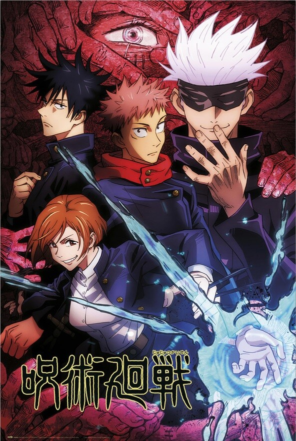
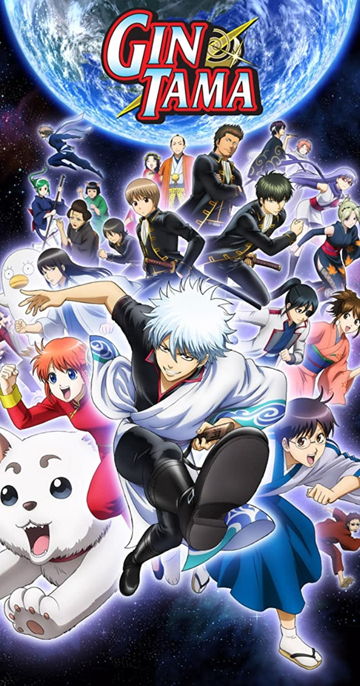
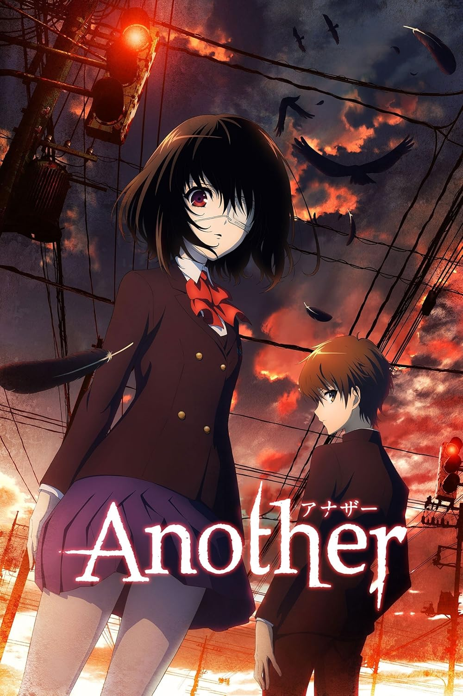

Isekai
Historias en las que el protagonista es transportado o queda atrapado en otro mundo, ya sea de fantasía o virtual, y debe aprender a sobrevivir en él.
Sword Art Online


Tu web de reseñas & descripciones de anime favorita.
¡Bienvenido! Aquí encontrarás reseñas de todos tus animes favoritos como Sword Art Online o Jujutsu Kaisen, organizados por género.
Haz clic en las portadas de los animes para encontrar una breve biografía y saber de qué tratan.
Historias en las que el protagonista es transportado o queda atrapado en otro mundo, ya sea de fantasía o virtual, y debe aprender a sobrevivir en él.
Animes pensados para un público joven, centrados en la acción, los combates, la amistad y el afán de superación del protagonista.

Series cuyo objetivo principal es hacer reír, con situaciones absurdas, parodias y personajes exagerados.

Historias que buscan generar miedo y tensión mediante el suspense, el misterio y los elementos sobrenaturales.

Una web de reseñas y descripciones de anime organizada por géneros: isekai, shonen, comedia y terror.
Cada anime representa un género distinto, para que cualquiera pueda encontrar algo a su gusto.
¡Claro! Rellena el formulario de la página de contacto y cuéntanos por qué te gustaría verlo aquí.
Con HTML5 y sin JavaScript: cada pregunta es un <details> y su título es un <summary>.